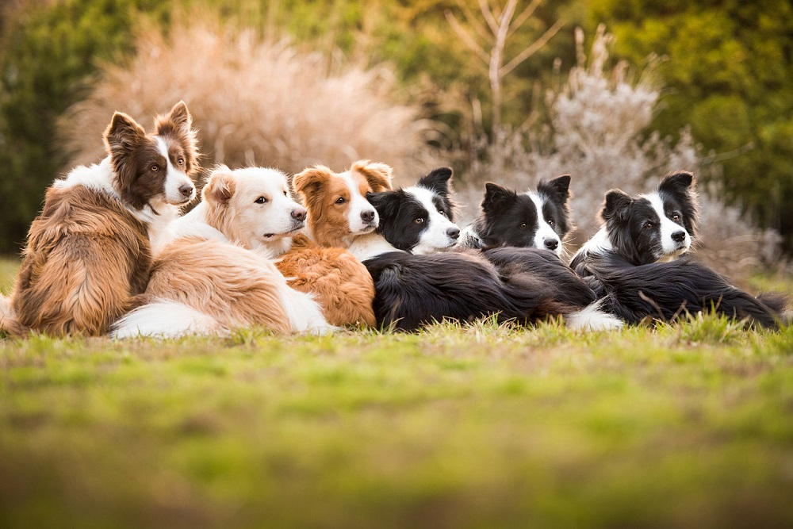

Несколько интересных, удивительных и необычных фактов о собаках со всего мира
Все знают, что собака - лучший друг человека, но так ли хорошо вы разбираетесь в этих четвероногих питомцах? Знали ли вы, что существует порода собак, которая не лает, и почему собаки любят сворачиваться в клубок? Собаки весьма интересные и необычные животные. Вот подборка фактов про них:
- Друзья наши меньшие могут осуществлять самые простые математические действия: считать до 5. Их интеллектуальный уровень как у двух-трехлетних детей, которые только познают мир.
- От собак может пахнут чипсами. Это связано с тем, что на лапках, при длительном несоблюдении гигиены, разрастаются бактерии, которые неприятно пахнут кукурузными чипсами. Если вы учуяли такой запах от своего питомца, необходимо вымыть лапы с мылом.
- В России собаки для своего существования освоили метро. С его помощью они добираются от одной точки города к другой. Это позволяет им найти еду.
- Собаки отлично различают и слышат ультразвуковой свист.
- Пол Маккартни специально для своей овчарки в конце одной из песен записал длинный свист.
- Собаки не любят когда их обнимают и сжимают. Для них это признак доминирование, поэтому перестаньте тискать своих псов.
- Мокрый нос у собак нужен для того, чтобы отлично различать запахи, он является своеобразным радаром.
- Ошейник с шипами впервые изобрели в Древней Греции. Это сделали не для красоты, а для того чтобы на домашних питомцев не нападали волки, и не душили их.
- Самое интересное, что собаки пьют, сворачивая язык в трубочку.
- У собак 1700 вкусовых рецепторов.
- Сердцебиение взрослой особи составляет 60-100 ударов в минуту, как у взрослого человека.
- У собаки имеется три пары век: верхняя, нижняя, а также средняя — мигательная. Она смачивает поверхность и не дает ей высыхать.
- В Древнем Китае собачки являлись защитниками императора. Собачка сидела у него в рукаве, при необходимости могла выскакивать и кусать обидчика своего владельца.
- Обратите внимание, что собакам нельзя есть шоколад, он отрицательно сказывается на работе сердца и может стать причиной склероза питомца.
- Собаки в 100 000 раз лучше чувствуют запахи, чем люди.
- Многие из владельцев собак считают, что их питомцы способны прогнозировать погоду. Это связано с хорошим нюхом и слухом.
- Самая маленькая собака на планете считается чихуахуа. Ее вес примерно 900 г, размер как у банки из под кока-колы
- Канарские острова были названы в честь собаки. Именно canaris в переводе означает собака. А вот канарейки были названы по наименованию самих островов.
- Самое интересное, что если собака относительно себя виляет хвостом в левую сторону, это означает, что она встревожена и очень внимательно относится к вашим действиям.
- Стоит отметить, что щенки чихуахуа рождаются с мягким темечком. Точно также как и люди.
- Примерно к одному году родничок у собак зарастает, становится твердым.
- Многие собаки если быстро едят и пьют, тоже могут икать, как люди.
- Самой основной проблемой со здоровьем у собак является ожирение. Поэтому обязательно много гуляйте со своими псами и контролируйте их физические нагрузки.
- В Японии в 17-18 веках существовал закон, который сулил убийство того, кто обидит собаку.
- Домохозяйки в США, в середине прошлого века, были очень обеспокоены тем, что собак отправляют в космос и они там умирают. Поэтому предложили отправлять на луну негритят.
- Самое интересное, что владельцы собак на 66% двигаются больше, чем все остальные люди. Поэтому, если вы хотите похудеть, заведите собаку.
- На Руси собака стоила как стадо баранов, 3 лошади или стадо овец. Именно настолько там ценились псы.
- Отпечатки носа у собак индивидуальные, как отпечатки пальцев у людей.
- Собаки инстинктивно требуют одобрения лидера перед каким-либо поступком.
- У собак потеют лапы, в отличие от людей у которых потеют подмышки.